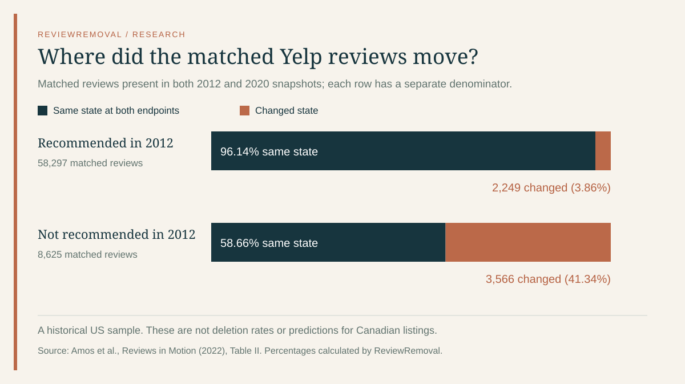

On this page
A Yelp review can leave the main review list without being deleted. It may move into the not recommended section and later return. A useful investigation starts by recording which state changed, rather than treating every missing review as a successful removal.
Why did my Yelp review disappear, then come back?
Yelp’s current explanation separates automated recommendations from content moderation. Reviews outside the recommended set remain accessible through a secondary link but do not contribute to the displayed review count or overall rating. Yelp says recommendations can change as more information becomes available; advertising does not influence the software and staff cannot override an individual recommendation.
There is also a published longitudinal study. Ryan Amos, Roland Maio, Prateek Mittal and Joseph A. Calandrino’s Reviews in Motion follows review classifications over repeated observations. Its Table II contains 66,922 reviews visible in both 2012 and 2020 snapshots. We use those four cells for the calculations below. Research paper, Table II, page 3
The four-cell matrix most summaries leave out
A before-and-after total hides two directions of movement. A recommended count could stay almost unchanged while many individual reviews swap places. The matrix preserves that information.
Historical matched reviews: original state versus later state
| 2012 state | Recommended in 2020 | Not recommended in 2020 | Row total |
|---|---|---|---|
| Recommended | 56,048 | 2,249 | 58,297 |
| Not recommended | 3,566 | 5,059 | 8,625 |
Scroll the table sideways to see every column.
Source counts: Amos et al., Table II. Row totals and the calculations below are ours. This is a historical matched sample, not a 2026 Canadian estimate.


Three calculations that answer different questions
1. How much movement occurred overall?
The changed-state count is 2,249 + 3,566 = 5,815. Divide by 66,922 matched reviews: 8.69%. This describes the share with different endpoint states. With only two observations, a review that changed twice and returned to its original state would look unchanged.
2. Which starting group changed more often?
For initially recommended reviews, 2,249 ÷ 58,297 = 3.86%. For initially not recommended reviews, 3,566 ÷ 8,625 = 41.34%. The denominators are different, so comparing the raw counts alone misses the size of each starting group.
These conditional proportions are retrospective descriptions of this sample. They are not the probability that your missing review will return, a reason to wait eight years, or evidence of a method for influencing the software.
3. How much change would a simple count miss?
The net recommended gain is 3,566 − 2,249 = 1,317. Gross observed movement is 5,815. That is 4.42 times the net change. A dashboard that tracks only the net total loses the identity and direction of thousands of changes in this example.
Four observation windows, four different contexts
Published study cohorts: do not interpret these as annual rates
| Cohort | Window | Businesses | Unique reviews | Crawls | Reclassified |
|---|---|---|---|---|---|
| EYG | 8 years | 201 | 196,383 | 2 | 8.69% |
| CHI | 11 months | 5,773 | 1,395,870 | 8 | 0.87% |
| UDS | 4 months | 2,829 | 358,184 | 4 | 0.54% |
| UIS | 4 months | 2,843 | 292,107 | 4 | 0.61% |
Scroll the table sideways to see every column.
Table I, page 3: EYG is the eight-year comparison; CHI covers Chicago; UDS and UIS stratify US areas by density and income. The research concerns US samples, not Canadian cities.
Do not rank these percentages as if the samples ran for the same length of time. Two snapshots cannot observe every intermediate transition. Four or eight crawls offer more chances to see movement, but the sampling intervals and review populations also differ. Dividing a cumulative share by months would impose an unsupported constant-rate model.
Can my rating change without any new reviews?
Yes, a change in the reviews included in an average can change the average. Consider an illustrative arithmetic example: eight five-star ratings and two one-star ratings total 42 stars across ten reviews, or 4.2. If one of the one-star ratings stops being included, the mean becomes 41 ÷ 9 = 4.556. If a five-star rating instead stops being included, it becomes 37 ÷ 9 = 4.111.
This example uses a simple mean to isolate the effect of changing membership. It is not an observed business, a prediction of Yelp’s exact display rounding, or a claim that recommendations favour one star level. It explains why tracking only new submissions is insufficient when you investigate a changed score.
A tracking sheet for Canadian businesses
For a Toronto restaurant, Vancouver service business or another Canadian listing, record changes on the exact profile. Start with a baseline and check again at a consistent interval. Weekly checks can be a manageable workflow; that is our operational suggestion, not a platform deadline or a statistically validated observation schedule.
- Record the review URL and time. Use the same local time zone, or UTC, for every observation. Preserve the original post rather than relying on a changing total.
- Record the state separately. Use recommended, not recommended, unavailable, or unknown. “Unavailable” should not automatically be labelled “removed for a policy violation.”
- Record the visible rating and count. Keep these as observations. Do not assume a rounded score reveals the complete underlying distribution.
- Record any actual moderation message. Store the case reference and wording separately from your interpretation of the page.
- Follow the individual review. If it returns, change its state in your log. Avoid counting the same review as several distinct removals.
Use our blank tracking template. It contains headings, not customer data. Keep private account messages out of anything you publish.
Questions business owners ask
Does “not recommended” prove that a review is fake?
No. It is a recommendation state, not a verified finding about the reviewer’s honesty. Yelp’s 2023 Trust & Safety report separately describes recommended, not recommended, moderator-removed and author-removed reviews. Its contribution breakdown and US report outcomes also have different geographic bases.
Can a removal service make a review recommended?
Yelp says no person can override an individual software recommendation. If your concern is a possible content-policy breach, that is a separate reporting question. ReviewRemoval assesses specific policy concerns; a quote does not purchase a recommendation change. Yelp’s explanation · Our Yelp service
What if the review actually violates a rule?
Preserve the post and identify the exact concern before reporting. Yelp’s reporting instructions describe the available route and decision notification. Our evidence checklist helps separate an observable fact from a suspicion. A genuine critical review may remain.
Methods, limitations and reuse
We transcribed the four transition counts and cohort summary into research-data.cjs. Our build script calculates row totals, conditional shares, endpoint movement and net change, then produces the CSV and chart from those values. Reproduce the results by adding the four cells and using the formulas above. We did not collect new Yelp reviews or replicate the authors’ crawls.
- Historical evidence: classifications and platform systems can change after the study.
- Matched-survivor sample: the transition matrix excludes reviews absent from either endpoint. It cannot estimate deletion rates or the experience of all original reviews.
- No causal finding: the matrix does not establish why any review moved.
- No Canadian rate: applying these percentages to Toronto, Montréal or other Canadian cities would be unsupported.
- No guaranteed outcome: tracking improves the record; it does not alter eligibility for removal.
Suggested citation
ReviewRemoval (2026). Why Yelp reviews disappear and reappear: a data audit. September 27, 2026. Original calculations from Amos et al., Reviews in Motion, Tables I–II. You may reuse our chart and calculations with a link to this article and attribution to the underlying researchers.
Primary sources
- Amos, Maio, Mittal and Calandrino, Reviews in Motion (2022) — Tables I–II. The paper includes a disclaimer that it does not necessarily reflect the FTC’s views.
- Research project and data access information.
- Yelp: How We Approach Reviews — current recommendation explanation.
- Yelp Trust & Safety Report 2023 — distinct recommendation and moderation categories.
- Yelp: How do I report a review?
Sources checked September 27, 2026.
Need help with a specific review?
Send the platform and the review link. We’ll assess the details and explain the price before paid work begins.
Get help with a Yelp review